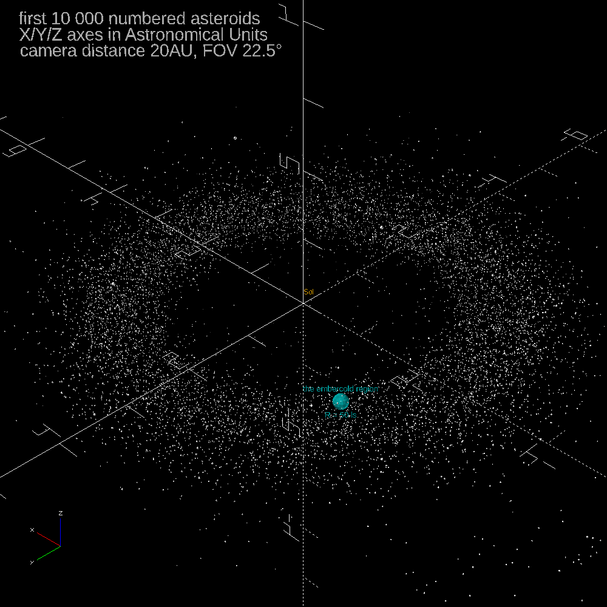

link to this page
The Embercold Region

The Embercold region is a vaguely defined volume of space 100 light seconds across, roughly centered on the asteroid 207 Hedda.
It is named after the science fiction writer Inkley Embercold - the exact reasons for this naming are not well recorded, but generally thought to be some combination of Embercold's writing having been particularly popular among the initial batch of settlers who traveled to 207 Hedda, and some of Embercold's predictions having turned out ostensibly correct in that population's circumstances.
Numerical characteristics
Given the embercold region's commonly accepted "50 lightsecond radius", anywhere between 174 and 195 Zetawatts of sunlight is passing through it at a given time, depending on its position in its orbit around the sun.
.
It is also expected to contain around 5.34e17 kg of mass at any given time, about 0.02% of the entire asteroid belt.